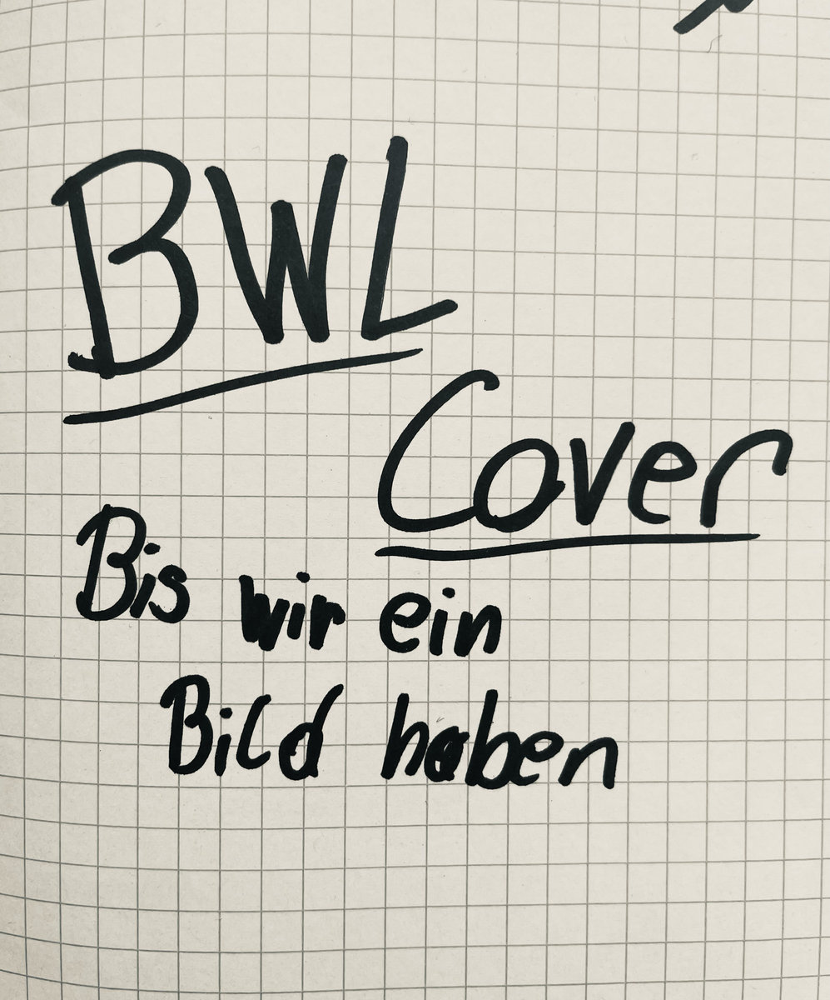

Review
SMUG - BWLer

Ich weiß gar nicht, wie ich das hier vernünftig erklären soll.
Halber Sprechgesang.
Bläser.
Punk.
Also ...
Hip-Brass-Punk?
Keine Ahnung.
Nennt den Quatsch, wie ihr wollt.
SMUG klingen ...
... minimal halbwegs schief.
... minimal halbwegs rotzig.
... minimal halbwegs unrhythmisch.
Also genau richtig.
Das wirkt nicht so, als hätten sich fünf Musikstudenten monatelang im Proberaum eingeschlossen, um den perfekten Song zu schreiben.
Das wirkt eher so, als hätten ein paar Leute gesagt:
"Joa ... läuft."
Und genau deshalb läuft's auch.
Ich hatte nach den ersten Sekunden schon dieses Grinsen im Gesicht, das man sonst nur bekommt, wenn irgendwo gleich etwas völlig Dummes passiert.
Passiert auch.
In einem der Kurzvideos auf den sozialen Medien haut es Sänger Fynn ordentlich auf die Fresse.
Der?
Heult nicht mal.
Sympathisch.
Inhaltlich machen sich SMUG über das Bildungsbürgertum her. Über Leute, die sich für die besseren Menschen halten, solange das Konto stimmt und der Latte Macchiato fair gehandelt wurde.
Finde ich das richtig?
Finde ich das gut?
...
Ehrlich?
Ist mir doch scheißegal.
Der Song macht Laune.
Und genau darum geht's.
Nicht die ganze Welt retten.
Nicht sämtliche Gesellschaftsschichten gleichzeitig an den Pranger stellen.
Sondern genau die kleinen Dinge anpieksen, die einem im Alltag gepflegt auf den Sack gehen.
Bei der Recherche wurde ich allerdings kurz sauer.
Bandcamp.
Spotify.
Internet.
Ich wollte mehr hören.
Gab's aber nicht.
Leute ...
Da geht noch mehr.
Und gebt mir davon ...
Mehr.
Ich habe schon Bands gehört, die sauberer gespielt haben.
Technisch besser waren.
Perfekter produziert wurden.
Aber selten eine, bei der ich nach einem einzigen Song dachte:
"Wo ist der Rest von dem Scheiß?"
Den Song findet ihr bei Bandcamp. SMUG treiben sich außerdem auf Instagram herum.